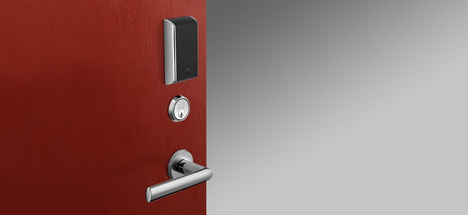
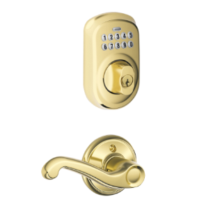
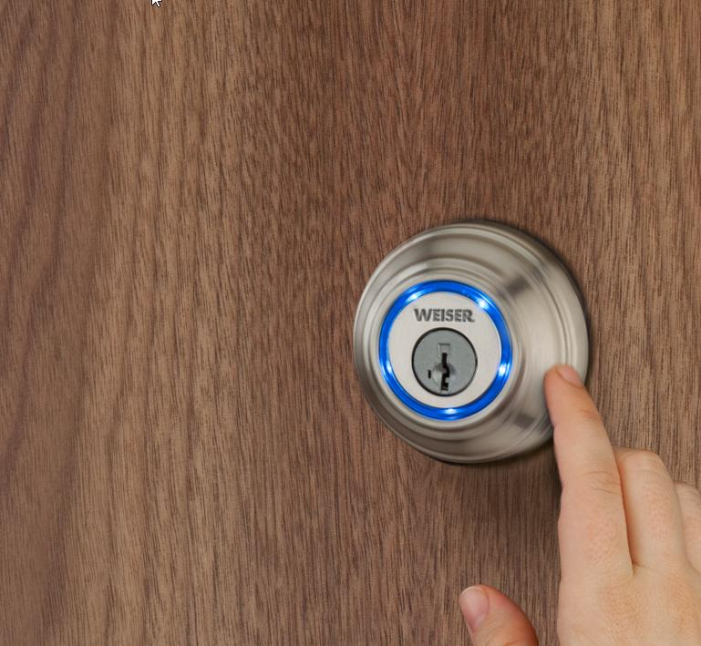

Products
Click to view IN120…
IN120

IN120 is an access control product manufactured by Corbin Russwin – a well-known American lock manufacturer based in Berlin, CT.
IN120 is a Wi-Fi-enabled lock featuring latest access control technologies and support for up to 2400 users. IN120 is highly customisable for your needs and available in several trims and finishes making it perfect fit for any designer’s needs.
As IN120 works with ASSA ABLOY software, it is a good upgrade or addition to any existing security system using this software solution, and ensures compatibility.
Ease of installation, affordable price, and high customisability makes it a great product for your security needs, whether your're upgrading your existing equipment or just now starting to add access control to your building.
Technical features:
- Powered by 6 AA batteries or 12-24 VDC power.
- Supports multiCLASS SE® Technology from HID Global® in 2.4 GHz, 13.56 MHz, and 125 kHz range.
- IN120 uses 128-bit AES encryption and supports current WiFi network security standards.
(source:
http://www.corbinrusswin.com/en/site/corbin-russwin/product-information/accesscontrol/in120/)
×
Click to view Plymouth trim Keypad Deadbolt…
Plymouth trim Keypad Deadbolt paired with Flair Lever Hall & Closet Lock

This Plymouth trim Keypad Deadbolt lock comes bundled with Flair Lever Hall and Closet Lock.
Available in premium finishes such as Satin Chrome, Aged Bronze, and Bright Brass, this is not only a high security product for your residential or family home safety, but it also offers a stylish entry option to impress any guests visiting your property.
Since the keypad offers keyless entry, getting locked out of your home due to lost keys will be a thing of the past.
Installation of this product is very easy and replacing any existing deadbolt locks shouldn’t be a problem as there is no wiring required, as opposed to some similar products.
Specification:
- This product is Grade 2 ANSI/BHMA certified
- Features 5-pin tumbler C keyway
- Fits 35-44mm door standard with special kit available for thicker doors
- The universal latches and deadbolts fit 60/70mm backsets
(source:
http://www.schlage.com/content/sch-us-2/en/home/products/BE365PLYFFF-F10FLAFFF.html)
×
Click to view Kevo…
Kevo by Kwikset

Ever wanted to unlock the door by nothing, but the touch of your hand? Well now you can! Kevo by Kwikset is a smart lock which utilises Bluetooth – the technology almost every one of us have in our Smartphones. Pair your smartphone with the lock and you will be able to lock and unlock the door by the touch of your hand, as long as your phone is in near proximity – pocket or purse for example.
You can even share your key with other smartphones and revoke access later – if your relatives are staying over and you have to be at work. Simply share the key with their smartphones – no more last minute key-cutting.
Don’t have a smartphone? Don’t worry, Kevo also offers a specialised key fob for the same key-less touch entry feature.
For the times when your smartphone’s battery dies before the end of the workday, there’s still the same old traditional key option available.
Features:
- Kevo is equipped with high standard Public Key Infrastructure encryption and features intelligent positioning technology to determine whether the user is inside or outside the building
- Kevo uses Kwikset’s deadlock SmartKey technology which is well-known for its security and has passed UL 437, par. 11.6 lock picking tests
- Supports most iOS and Android devices
(source:
http://www.kwikset.com/kevo/default.aspx)
×
Plan
First of all the product articles would be posted on company's social media, such as Twitter, Facebook etc. to inform followers. This might also gain likes, shares, and retweets from the original equipment manufacturers spreading the LocksOnline name.
Articles could also be posted on relevant forums and blogs, which allow direct guest posting.
Equipment manufacturers might also have blogs or review articles. Articles from LocksOnline could be published there with backlinks to LocksOnline (if allowed).
Backlinks could also be acquired from recommendation or Q&A sites such as Quora. If a user there asks for a recommendation on a product/similar products, small answer could be given there with a source linking back to LocksOnline.
Traffic could also be acquired by adding information to relevant Wikipedia pages and referencing the source with a link to LocksOnline articles.
{kind=link}